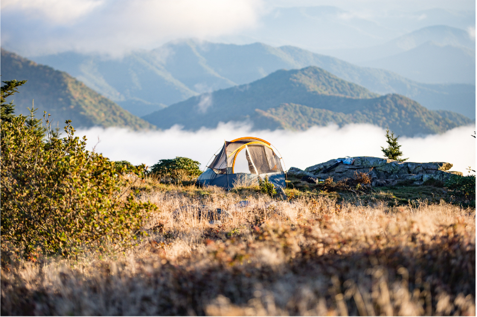

日本飛驒山脈，長野縣松本市、岐阜縣高山市交界，槍岳之下，槍岳山莊的早朝屋南邊朝燒岩稜
稜線一路通向穗高群峰，不過穗高現在都被大喰岳擋住了
這條稜線也是長野縣松本市、岐阜縣高山市的交界
右方遠處有乘鞍岳（3026m）、御嶽（3067m）兩座火山

朝陽照入槍沢大谷中
該出發啦，今天可有得走了
由槍岳山莊走槍岳的東稜線「東鐮尾根」前往西岳、再轉北經過大天井岳，抵達燕岳山莊
這條路線就是以秋紅山色著名的「表銀座」縱走。
里程很長，如果反著從燕岳走來槍岳，要花兩天的時間
但從槍岳走到燕岳是下坡，所以花九個小時拚一拚，應該可以在今天內完成
D3 開始自己走啦！上回的雪西有順取120岳的博可爾基點峰，大南山和弓水山，這次有機會把其他的能走多少是多少。所以第一座為博可爾最高峰，這次和之前走不同路線選，選自基點和最高峰，不同角度拍博可爾草一日竹火，值得。上什最高峰時間多花了些，火石山直接跳過，火石下無水（應上爬100M有），過山澗即背水，因知今天另兩隊共31人會在大南山紮，不想人擠人直接背水走哪紮哪。大南北沒明顯入口和標示，就是好撥箭竹路到最高點找1-2處自拍。登山口勉強可紮一人又有4G，溫暖無風無反潮。
D4 一早到大南山營地，冷、風大、又濕，不停留。弓水山不再上，到頭鷹前拍了有人和沒人景色後，忍不住的也立腳架自拍。最後頭鷹山與他隊合照後輕裝往頭鷹北，但無路跡GPX，自己切，本應下300M再上200M返程相反，但才下100M海拔，一眼被樹枝刺傷不適，只好爬上岩石稜線上自拍撤退照，當晚宿奇峻營地大，晚上和友隊協作小喝閒聊（正好先前行程遇過認識），晚間傷的眼不適狂流淚單眼視力減弱，因而評估原計次日要走的釜碗西峰+釜碗山來回約12-14小時，恐不切當，僅走到中間的西峰，避免視力不良摸黑增加危險。
日本 - 槍岳、表銀座縱走
作者：Vincent
發表於2018/12/29